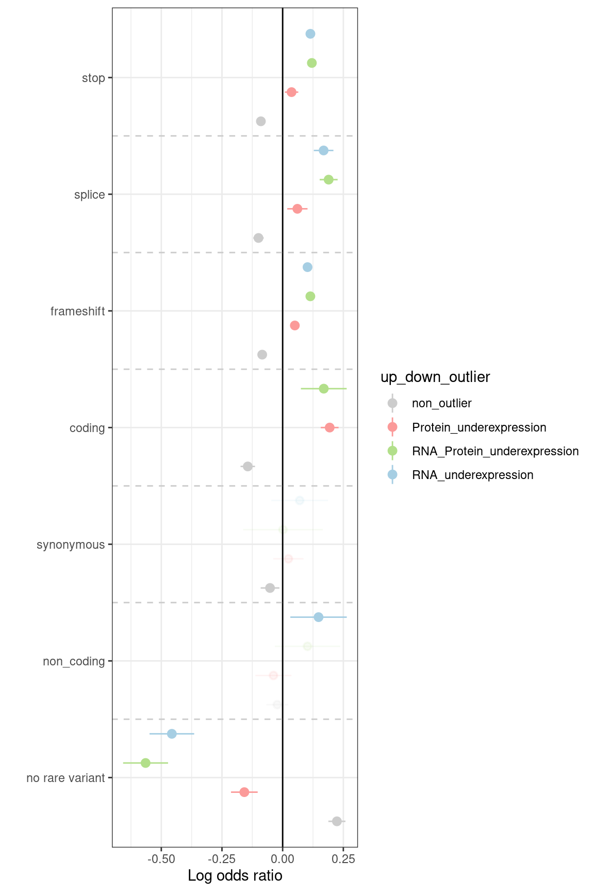

# Load plotting config and functions
source("src/config.R")
source("src/functions/Integration/integrate_annotate_omics.R")
source("src/functions/variant_enrichment.R")
# Read integrated omics file
# rp <- readRDS("/s/project/mitoMultiOmics/multiOMICs_integration/processed_data/integration/patient_omics_full.RDS") %>% as.data.table()
rp <- readRDS(snakemake@input$patient_omics) %>% as.data.table()
# Subset cases with WES and RNA-seq data avaliable
rp <- rp[WES_avaliable == T & RNA_seq_avaliable == T]
paste("Number of samples with WES export and RNA-seq avaliable:", uniqueN(rp$SAMPLE_ID))
## [1] "Number of samples with WES export and RNA-seq avaliable: 140"
#Keep only genes, with both RNA and protein measured
rp <- rp[ gene_detected == "RNA and protein detected"]
# Filter for the genes, detected as outliers at least once
outliers <- unique(rp[outlier_class != "non_outlier"]$geneID)
rp <- rp[geneID %in% outliers]
# Add up- down- outlier class
rp <- add_up_down_class(rp,
Padj_threshold = PADJ_THRESHOLD,
Zscore_threshold = ZSCORE_THRESHOLD,
l2FC_threshold = LOG2FC_THRESHOLD)
# Subset necessary columns
rp <- rp[ , c("SAMPLE_ID", "geneID", "outlier_class", "up_down_outlier") ]
rp <- rp[!duplicated(rp), ]
Outlier class
os1 <- rp[, .N, by = outlier_class]
os2 <- rp[, .N, by = up_down_outlier]
colnames(os2)[1] <-"outlier_class"
os <- rbind(os1, os2)
rm(os1, os2)
Number of outliers per class
DT::datatable(os, caption = "Outlier counts", escape = F)
####################
# As soon as it is not allowed to share genetic data,
# only the result of the analysis could be shared.
# to reproduce the analysis please prepare the variant table (vt)
# with 3 columns: sample_Id, gene_Id and variant type: stop, coding, splice ...
# Read variant annotation
# vt <- fread("/s/project/mitoMultiOmics/multiOMICs_integration/rare_variants.tsv")
# vt <- vt[ geneID %in% unique(rp$geneID), c("SAMPLE_ID", "geneID", "var_type")]
# rp <- rp[SAMPLE_ID %in% unique(vt$SAMPLE_ID) ]
# rp <- merge(vt, rp, by = c("SAMPLE_ID", "geneID"), all.y = T )
# rp[is.na(var_type), var_type := "no rare variant"]
#
#
# enr <- reshape2::dcast(data = rp, geneID + SAMPLE_ID + var_type ~ up_down_outlier ,
# fun.aggregate = cat.agg)
#
# enrichments <- data.frame()
# for (outl in unique(rp$up_down_outlier)){
# tem_df <- enr
# setnames(tem_df, outl, "outliers")
# tem_df <- tem_df[, c("geneID", "SAMPLE_ID", "outliers", "var_type" )]
# feat <- unique(tem_df$var_type)
# tem_df <- dcast(data = tem_df, geneID + SAMPLE_ID + outliers ~ var_type, fun.aggregate = cat.agg)
# enrichment <- enrich(tem_df, outlier= "outliers" ,features= feat)
# enrichment$ci_left <- enrichment$Estim - 1.96 * enrichment$Std
# enrichment$ci_right <- enrichment$Estim + 1.96 * enrichment$Std
# enrichment$outlier_class <- rep(outl, nrow(enrichment))
# enrichments <- rbind(enrichments, enrichment)
# enr$outliers <- NULL
# }
#
# enrichments <- as.data.table(enrichments)
# enrichments[, significant := 1 ]
# enrichments[enrichments$Pval >= 0.05 , significant := 0.9 ]
#
#
# enrichments <- as.data.table(enrichments)
# enrichments[outlier_class == "non_outlier", priori:=Estim]
# enrichments[ outlier_class != "non_outlier" & Pval >= 0.05, priori:=Estim]
# enrichments[ outlier_class != "non_outlier" & Pval < 0.05, priori:=Estim +1]
# enrichments <- enrichments[order(priori, decreasing = T), ]
# enrichments$importance <- seq(1:nrow(enrichments))
# enrichments <- enrichments[order(importance), ]
#
#
# write_tsv(enrichments, "/s/project/mitoMultiOmics/multiOMICs_integration/enrichment_rare_vt.tsv")
# setnames(enrichments, c("Cat", "outlier_class"), c("var_type", "up_down_outlier"))
enrichments <- fread(snakemake@input$enrichments_proportions)
# enrichments <- fread("/s/project/mitoMultiOmics/multiOMICs_integration/raw_data/variant_type_enr_prop.tsv")
nodelist <- levels(enrichments$var_type)
Outlier class
ggplot(data = enrichments[up_down_outlier %in% c("RNA_underexpression", "Protein_underexpression", "RNA_Protein_underexpression", "non_outlier")],
aes(x = var_type, y = Estim)) +
geom_pointrange(aes(x = var_type, ymin = ci_left, ymax = ci_right, colour = up_down_outlier, alpha = significant), position = position_dodge(width = 1)) +
geom_hline(yintercept = 0) +
geom_vline(color = "gray80", linetype = "dashed", xintercept = which(nodelist=="No rare variant")-0.5) +
geom_vline(color = "gray80", linetype = "dashed", xintercept = which(nodelist=="Rare variant")-0.5) +
theme_bw() +
xlab('') +
ylab('Log odds ratio') +
scale_alpha(guide = 'none')+
scale_color_manual(values = outlier_colors)+
coord_flip(ylim = c(min(enrichments[enrichments$Pval <0.05, 'ci_left' ] , na.rm = T), max(enrichments[enrichments$Pval <0.05, "ci_right" ], na.rm = T)))

IyctLS0KIycgdGl0bGU6IEVucmljaG1lbnQgb2YgcmFyZSB2YXJpYW50IHR5cGVzIGluIG91dGxpZXJzICAKIycgYXV0aG9yOiBzbWlybm92ZAojJyB3YjoKIycgIGlucHV0OgojJyAgLSBwYXRpZW50X29taWNzOiAnYHNtIGNvbmZpZ1siUFJPQ19EQVRBIl0gKyAiL2ludGVncmF0aW9uL3BhdGllbnRfb21pY3NfZnVsbC5SRFMiYCcKIycgIC0gZW5yaWNobWVudHNfcHJvcG9ydGlvbnM6ICdgc20gY29uZmlnWyJSQVdfREFUQSJdICsgIi92YXJpYW50X3R5cGVfZW5yX3Byb3AudHN2ImAnCiMnICBvdXRwdXQ6CiMnIG91dHB1dDogCiMnICAgaHRtbF9kb2N1bWVudDoKIycgICAgY29kZV9mb2xkaW5nOiBoaWRlCiMnICAgIGNvZGVfZG93bmxvYWQ6IFRSVUUKIyctLS0KCgoKIyBMb2FkIHBsb3R0aW5nIGNvbmZpZyBhbmQgZnVuY3Rpb25zCnNvdXJjZSgic3JjL2NvbmZpZy5SIikKc291cmNlKCJzcmMvZnVuY3Rpb25zL0ludGVncmF0aW9uL2ludGVncmF0ZV9hbm5vdGF0ZV9vbWljcy5SIikKc291cmNlKCJzcmMvZnVuY3Rpb25zL3ZhcmlhbnRfZW5yaWNobWVudC5SIikKCgojIFJlYWQgaW50ZWdyYXRlZCBvbWljcyBmaWxlIAojIHJwIDwtIHJlYWRSRFMoIi9zL3Byb2plY3QvbWl0b011bHRpT21pY3MvbXVsdGlPTUlDc19pbnRlZ3JhdGlvbi9wcm9jZXNzZWRfZGF0YS9pbnRlZ3JhdGlvbi9wYXRpZW50X29taWNzX2Z1bGwuUkRTIikgJT4lIGFzLmRhdGEudGFibGUoKQpycCA8LSByZWFkUkRTKHNuYWtlbWFrZUBpbnB1dCRwYXRpZW50X29taWNzKSAlPiUgYXMuZGF0YS50YWJsZSgpCgojIFN1YnNldCBjYXNlcyB3aXRoIFdFUyBhbmQgUk5BLXNlcSBkYXRhIGF2YWxpYWJsZSAKcnAgPC0gcnBbV0VTX2F2YWxpYWJsZSA9PSBUICYgUk5BX3NlcV9hdmFsaWFibGUgPT0gVF0KcGFzdGUoIk51bWJlciBvZiBzYW1wbGVzIHdpdGggV0VTIGV4cG9ydCBhbmQgUk5BLXNlcSBhdmFsaWFibGU6IiwgdW5pcXVlTihycCRTQU1QTEVfSUQpKQoKCiNLZWVwIG9ubHkgZ2VuZXMsIHdpdGggYm90aCBSTkEgYW5kIHByb3RlaW4gbWVhc3VyZWQgCnJwIDwtIHJwWyBnZW5lX2RldGVjdGVkID09ICJSTkEgYW5kIHByb3RlaW4gZGV0ZWN0ZWQiXQoKIyBGaWx0ZXIgZm9yIHRoZSBnZW5lcywgZGV0ZWN0ZWQgYXMgb3V0bGllcnMgYXQgbGVhc3Qgb25jZQpvdXRsaWVycyA8LSB1bmlxdWUocnBbb3V0bGllcl9jbGFzcyAhPSAibm9uX291dGxpZXIiXSRnZW5lSUQpCnJwIDwtIHJwW2dlbmVJRCAlaW4lIG91dGxpZXJzXQoKIyBBZGQgdXAtIGRvd24tIG91dGxpZXIgY2xhc3MKcnAgPC0gYWRkX3VwX2Rvd25fY2xhc3MocnAsIAogICAgICAgICAgICAgICAgICAgICAgICBQYWRqX3RocmVzaG9sZCA9ICBQQURKX1RIUkVTSE9MRCwKICAgICAgICAgICAgICAgICAgICAgICAgWnNjb3JlX3RocmVzaG9sZCA9IFpTQ09SRV9USFJFU0hPTEQsIAogICAgICAgICAgICAgICAgICAgICAgICBsMkZDX3RocmVzaG9sZCA9IExPRzJGQ19USFJFU0hPTEQpCgojIFN1YnNldCBuZWNlc3NhcnkgY29sdW1ucwpycCA8LSBycFsgLCBjKCJTQU1QTEVfSUQiLCAiZ2VuZUlEIiwgIm91dGxpZXJfY2xhc3MiLCAidXBfZG93bl9vdXRsaWVyIikgXQpycCA8LSBycFshZHVwbGljYXRlZChycCksIF0KCiMnICMgT3V0bGllciBjbGFzcwpvczEgPC0gcnBbLCAuTiwgYnkgPSBvdXRsaWVyX2NsYXNzXQpvczIgPC0gcnBbLCAuTiwgYnkgPSB1cF9kb3duX291dGxpZXJdCmNvbG5hbWVzKG9zMilbMV0gPC0ib3V0bGllcl9jbGFzcyIgCm9zIDwtIHJiaW5kKG9zMSwgb3MyKQpybShvczEsIG9zMikKIycgIyMjIE51bWJlciBvZiBvdXRsaWVycyBwZXIgY2xhc3MKRFQ6OmRhdGF0YWJsZShvcywgY2FwdGlvbiA9ICJPdXRsaWVyIGNvdW50cyIsICAgZXNjYXBlID0gRikKCgoKIyMjIyMjIyMjIyMjIyMjIyMjIyMKCgojIEFzIHNvb24gYXMgaXQgaXMgbm90IGFsbG93ZWQgdG8gc2hhcmUgZ2VuZXRpYyBkYXRhLAojIG9ubHkgdGhlIHJlc3VsdCBvZiB0aGUgYW5hbHlzaXMgY291bGQgYmUgc2hhcmVkLgojIHRvIHJlcHJvZHVjZSB0aGUgYW5hbHlzaXMgcGxlYXNlIHByZXBhcmUgdGhlIHZhcmlhbnQgdGFibGUgKHZ0KQojIHdpdGggMyBjb2x1bW5zOiBzYW1wbGVfSWQsIGdlbmVfSWQgYW5kIHZhcmlhbnQgdHlwZTogc3RvcCwgY29kaW5nLCBzcGxpY2UgLi4uCgojIFJlYWQgdmFyaWFudCBhbm5vdGF0aW9uIAojIHZ0IDwtIGZyZWFkKCIvcy9wcm9qZWN0L21pdG9NdWx0aU9taWNzL211bHRpT01JQ3NfaW50ZWdyYXRpb24vcmFyZV92YXJpYW50cy50c3YiKQojIHZ0IDwtIHZ0WyBnZW5lSUQgJWluJSB1bmlxdWUocnAkZ2VuZUlEKSwgYygiU0FNUExFX0lEIiwgImdlbmVJRCIsICJ2YXJfdHlwZSIpXQojIHJwIDwtIHJwW1NBTVBMRV9JRCAlaW4lIHVuaXF1ZSh2dCRTQU1QTEVfSUQpIF0KIyBycCA8LSBtZXJnZSh2dCwgcnAsIGJ5ID0gYygiU0FNUExFX0lEIiwgImdlbmVJRCIpLCBhbGwueSA9IFQgKQojIHJwW2lzLm5hKHZhcl90eXBlKSwgdmFyX3R5cGUgOj0gIm5vIHJhcmUgdmFyaWFudCJdCiMgCiMgCiMgZW5yIDwtIHJlc2hhcGUyOjpkY2FzdChkYXRhID0gcnAsIGdlbmVJRCArICBTQU1QTEVfSUQgKyAgdmFyX3R5cGUgfiB1cF9kb3duX291dGxpZXIgLCAKIyAgICAgICAgICAgICAgICAgICAgICAgIGZ1bi5hZ2dyZWdhdGUgPSBjYXQuYWdnKQojIAojIGVucmljaG1lbnRzIDwtIGRhdGEuZnJhbWUoKQojIGZvciAob3V0bCBpbiB1bmlxdWUocnAkdXBfZG93bl9vdXRsaWVyKSl7CiMgICB0ZW1fZGYgPC0gZW5yCiMgICBzZXRuYW1lcyh0ZW1fZGYsIG91dGwsICJvdXRsaWVycyIpCiMgICB0ZW1fZGYgPC0gdGVtX2RmWywgYygiZ2VuZUlEIiwgIlNBTVBMRV9JRCIsICJvdXRsaWVycyIsICJ2YXJfdHlwZSIgKV0KIyAgIGZlYXQgPC0gdW5pcXVlKHRlbV9kZiR2YXJfdHlwZSkKIyAgIHRlbV9kZiA8LSBkY2FzdChkYXRhID0gdGVtX2RmLCBnZW5lSUQgKyBTQU1QTEVfSUQgICsgb3V0bGllcnMgfiB2YXJfdHlwZSwgZnVuLmFnZ3JlZ2F0ZSA9IGNhdC5hZ2cpIAojICAgZW5yaWNobWVudCA8LSBlbnJpY2godGVtX2RmLCBvdXRsaWVyPSAib3V0bGllcnMiICxmZWF0dXJlcz0gZmVhdCkKIyAgIGVucmljaG1lbnQkY2lfbGVmdCA8LSBlbnJpY2htZW50JEVzdGltIC0gMS45NiAqIGVucmljaG1lbnQkU3RkCiMgICBlbnJpY2htZW50JGNpX3JpZ2h0IDwtIGVucmljaG1lbnQkRXN0aW0gKyAxLjk2ICogZW5yaWNobWVudCRTdGQKIyAgIGVucmljaG1lbnQkb3V0bGllcl9jbGFzcyA8LSByZXAob3V0bCwgbnJvdyhlbnJpY2htZW50KSkKIyAgIGVucmljaG1lbnRzIDwtIHJiaW5kKGVucmljaG1lbnRzLCBlbnJpY2htZW50KQojICAgZW5yJG91dGxpZXJzIDwtIE5VTEwKIyB9CiMgCiMgZW5yaWNobWVudHMgPC0gYXMuZGF0YS50YWJsZShlbnJpY2htZW50cykKIyBlbnJpY2htZW50c1ssIHNpZ25pZmljYW50IDo9IDEgXQojIGVucmljaG1lbnRzW2VucmljaG1lbnRzJFB2YWwgPj0gMC4wNSAsIHNpZ25pZmljYW50IDo9IDAuOSBdCiMgCiMgCiMgZW5yaWNobWVudHMgPC0gYXMuZGF0YS50YWJsZShlbnJpY2htZW50cykKIyBlbnJpY2htZW50c1tvdXRsaWVyX2NsYXNzID09ICJub25fb3V0bGllciIsIHByaW9yaTo9RXN0aW1dCiMgZW5yaWNobWVudHNbIG91dGxpZXJfY2xhc3MgIT0gIm5vbl9vdXRsaWVyIiAmIFB2YWwgPj0gMC4wNSwgcHJpb3JpOj1Fc3RpbV0KIyBlbnJpY2htZW50c1sgb3V0bGllcl9jbGFzcyAhPSAibm9uX291dGxpZXIiICYgUHZhbCA8IDAuMDUsIHByaW9yaTo9RXN0aW0gKzFdCiMgZW5yaWNobWVudHMgPC0gZW5yaWNobWVudHNbb3JkZXIocHJpb3JpLCBkZWNyZWFzaW5nID0gVCksIF0KIyBlbnJpY2htZW50cyRpbXBvcnRhbmNlIDwtIHNlcSgxOm5yb3coZW5yaWNobWVudHMpKQojIGVucmljaG1lbnRzIDwtIGVucmljaG1lbnRzW29yZGVyKGltcG9ydGFuY2UpLCBdCiMgCiMgCiMgd3JpdGVfdHN2KGVucmljaG1lbnRzLCAiL3MvcHJvamVjdC9taXRvTXVsdGlPbWljcy9tdWx0aU9NSUNzX2ludGVncmF0aW9uL2VucmljaG1lbnRfcmFyZV92dC50c3YiKQojIHNldG5hbWVzKGVucmljaG1lbnRzLCBjKCJDYXQiLCAib3V0bGllcl9jbGFzcyIpLCBjKCJ2YXJfdHlwZSIsICJ1cF9kb3duX291dGxpZXIiKSkKCgplbnJpY2htZW50cyA8LSBmcmVhZChzbmFrZW1ha2VAaW5wdXQkZW5yaWNobWVudHNfcHJvcG9ydGlvbnMpCiMgZW5yaWNobWVudHMgPC0gZnJlYWQoIi9zL3Byb2plY3QvbWl0b011bHRpT21pY3MvbXVsdGlPTUlDc19pbnRlZ3JhdGlvbi9yYXdfZGF0YS92YXJpYW50X3R5cGVfZW5yX3Byb3AudHN2IikKbm9kZWxpc3QgPC0gbGV2ZWxzKGVucmljaG1lbnRzJHZhcl90eXBlKQoKIycgIyMgT3V0bGllciBjbGFzcwojKyBmaWcud2lkdGg9NiwgZmlnLmhlaWdodD05CmdncGxvdChkYXRhID0gZW5yaWNobWVudHNbdXBfZG93bl9vdXRsaWVyICVpbiUgYygiUk5BX3VuZGVyZXhwcmVzc2lvbiIsICJQcm90ZWluX3VuZGVyZXhwcmVzc2lvbiIsICJSTkFfUHJvdGVpbl91bmRlcmV4cHJlc3Npb24iLCAibm9uX291dGxpZXIiKV0sIAogICAgICAgYWVzKHggPSB2YXJfdHlwZSwgeSA9IEVzdGltKSkgKwogIGdlb21fcG9pbnRyYW5nZShhZXMoeCA9IHZhcl90eXBlLCB5bWluID0gY2lfbGVmdCwgeW1heCA9IGNpX3JpZ2h0LCBjb2xvdXIgPSB1cF9kb3duX291dGxpZXIsIGFscGhhID0gc2lnbmlmaWNhbnQpLCBwb3NpdGlvbiA9IHBvc2l0aW9uX2RvZGdlKHdpZHRoID0gMSkpICsKICBnZW9tX2hsaW5lKHlpbnRlcmNlcHQgPSAwKSArCiAgZ2VvbV92bGluZShjb2xvciA9ICJncmF5ODAiLCBsaW5ldHlwZSA9ICJkYXNoZWQiLCB4aW50ZXJjZXB0ID0gd2hpY2gobm9kZWxpc3Q9PSJObyByYXJlIHZhcmlhbnQiKS0wLjUpICsKICBnZW9tX3ZsaW5lKGNvbG9yID0gImdyYXk4MCIsIGxpbmV0eXBlID0gImRhc2hlZCIsIHhpbnRlcmNlcHQgPSB3aGljaChub2RlbGlzdD09IlJhcmUgdmFyaWFudCIpLTAuNSkgKwogIHRoZW1lX2J3KCkgKyAKICB4bGFiKCcnKSArIAogIHlsYWIoJ0xvZyBvZGRzIHJhdGlvJykgICsgCiAgc2NhbGVfYWxwaGEoZ3VpZGUgPSAnbm9uZScpKwogIHNjYWxlX2NvbG9yX21hbnVhbCh2YWx1ZXMgPSBvdXRsaWVyX2NvbG9ycykrIAogIGNvb3JkX2ZsaXAoeWxpbSA9IGMobWluKGVucmljaG1lbnRzW2VucmljaG1lbnRzJFB2YWwgPDAuMDUsICdjaV9sZWZ0JyBdICwgbmEucm0gPSBUKSwgIG1heChlbnJpY2htZW50c1tlbnJpY2htZW50cyRQdmFsIDwwLjA1LCAiY2lfcmlnaHQiIF0sIG5hLnJtID0gVCkpKSAKCgoK